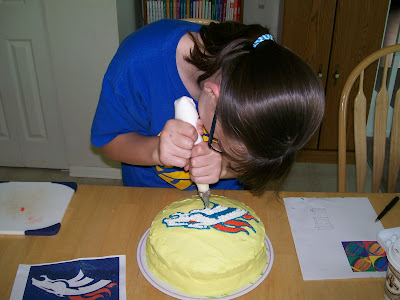
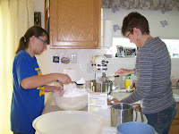
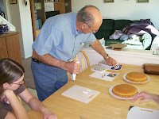
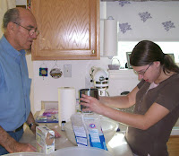
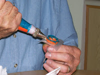
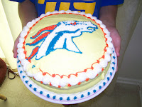
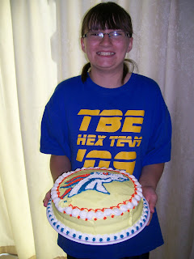

Mr. D's Cake Decorating Class
10/30/2009
{kind=link}

{kind=link}

{kind=link}

{kind=link}

Today is Hannah's first birthday as a teen. Congratulations and Happy Birthday, Hannah!
Long before I became a puppet maker I was a cake decorator. So with the grand occasion of Hannah's speci
{kind=link}

al day, we held a cake decorating class for Hannah, sister Nicole, and Joy, their mother - with Grandpa/Dad as teacher. It was a very fun day and we did it all - from sifting (or "shifting" - a family joke) the powdered sugar, to cleaning up the leftovers some four hours later! TWO sport's themed cakes were created (you see one here) with all four participants taking part in the artistry.The cakes are now history and all that remain are these pictures and some fun memories. Personally, it was refreshing to revive and employ some retired sweet artistic skills, but I do believe I prefer making puppets. So far, no one has cut up and "destroyed" a dummy the day after I've worked hard to complete it. At least,
{kind=link}

not that I know of!{kind=link}

Hannah
A teen at last!
Happy Birthday!
(Go Broncos!)